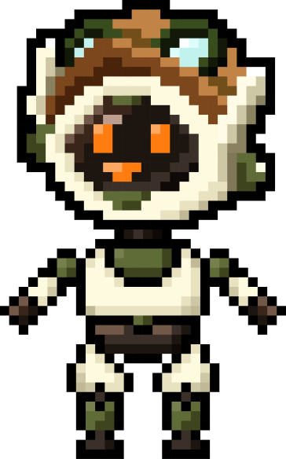
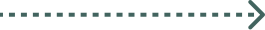
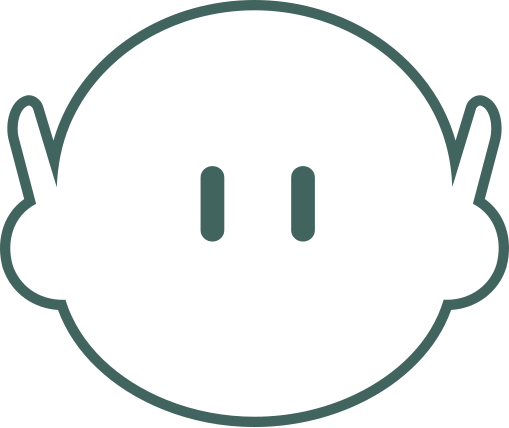

PREPARING TO EXPLORE
37.2636 N127.0286 E
37.2636 N127.0286 E
Curio is a small explorer robot that collects cities.
For every place it stops, it leaves one photo, a few quiet lines,
and a stamp in its passport. PROJECT. CURIO. CITY.
is the travel log of those stops, one volume per place.



PROJECT. CURIO. CITY.© 2026 Kim Minseok